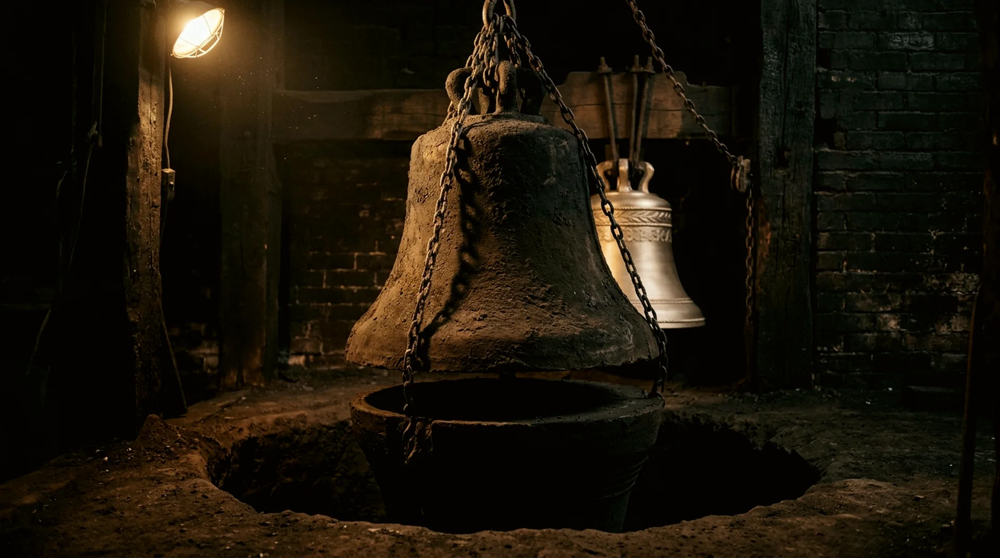

The founding of a bell · Order HL-1842-0001 to the present day
One bell, from loam to first strike
The bell on this page is a memorial tenor in D — a shade over a metre and a half across the mouth, two and three-quarter tonnes of bronze. It was founded the way every Harlowe bell has been founded for one hundred and eighty years. Follow it down the page; where you see a note named, you may strike it.
I
The mould
A bell is born hollow, so it is built twice. The core is raised in brick and coated in loam — clay worked with hair — and a wooden strickle board, cut to the bell's inner profile, is swept around it until the curve is true. Over it the cope is formed the same way to the outer profile. The bell itself is the silence between the two.
Inscriptions and ornament are set into the cope in wax, in mirror writing, so the metal may read them rightly. Six weeks of slow stove heat dry the loam to stone.

II
The metal
Bell metal has not changed since the Middle Ages, because nothing better has been found: 77 parts copper to 23 of tin — harder than either, and it rings. The furnace takes the morning to bring three tonnes to 1,100 °C. You judge the melt by its colour: straw, then cherry, then the white of a winter sun.
III
The pour
Pour day is quiet. The yard is cleared, the channels are dressed, and no one speaks while metal is moving — an old rule, and a good one. The bronze goes down the runner at walking pace and the mould drinks a tonne in under two minutes. Then there is nothing to do but wait, which is the hardest part of the craft.
IV
The cooling
A small bell cools overnight. A tenor keeps its heat for a week, buried in the pit, and must not be hurried — bronze cooled unevenly carries a flaw you will hear for five hundred years. When it is cold, the cope is broken away. No mould ever casts a second bell; whatever this one is, there will never be another.
V
The tuning
Inside every bell sleep five notes, and they wake together at the strike. We set the raw casting mouth-up on the vertical lathe and cut fine annular rings from the inner wall, listening between cuts, until the five stand in true harmony — each within ten cents of its place. A bell can only be tuned down: metal, once cut, cannot be put back. The lathe teaches patience the way the pit teaches it — irreversibly.
These are the five, for our tenor in D. Press each one; then hear them wake together.
VI
The first strike
Months of loam and fire and patience come down to one swing of the clapper, with the founder's hand still on the rope. Everyone in the yard stops to hear it. This is the moment we work for — and it belongs to you as much as to us.
Afterwards
Then it leaves us
The bell goes up a tower we will likely never climb again, and starts a working life measured in centuries. Somewhere it is about to strike the hour over people who will never know our name. That is the whole of the trade: we make the thing that outlives the maker.